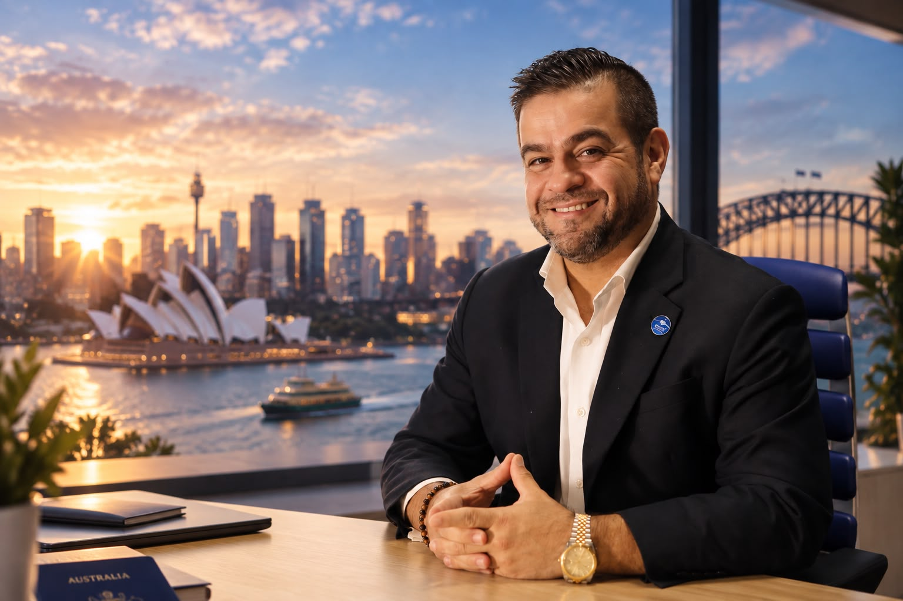

SELF — Mapa Estratégico do Ser
Compreenda seu Estado A, avalie as 12 dimensões da vida, defina seu Estado Desejado e construa objetivos, indicadores e iniciativas para evoluir com consistência.
Explorar mentorias pessoais →Um método para transformar diagnóstico em decisões, objetivos em planos e planos em resultados acompanháveis. Para pessoas, líderes e empresas que desejam evoluir com clareza.
O Instituto trabalha com duas aplicações complementares: a estratégia para a vida e a estratégia para negócios.
Compreenda seu Estado A, avalie as 12 dimensões da vida, defina seu Estado Desejado e construa objetivos, indicadores e iniciativas para evoluir com consistência.
Explorar mentorias pessoais →Conecte visão, liderança, processos, clientes, pessoas e resultados por meio de um mapa estratégico empresarial com seis perspectivas e acompanhamento de metas.
Explorar programas empresariais →Uma estrutura que integra autoconhecimento, planejamento estratégico e execução — adaptada ao contexto de cada travessia.
Quem você é, o que valoriza e onde está.
Onde deseja chegar e quais escolhas importam.
Prioridades, iniciativas e ações concretas.
Indicadores, metas e evidências de progresso.
Consistência, contribuição e legado.
Diagnósticos e ferramentas estratégicas ajudam a traduzir intenções em um plano pessoal ou empresarial mensurável.
Leitura estruturada das 12 dimensões pessoais para identificar prioridades e desequilíbrios.
Relações de causa e efeito entre objetivos, indicadores, metas e iniciativas.
Acompanhamento periódico para transformar decisões em execução consistente.
O acesso a funcionalidades específicas pode exigir cadastro ou autorização.
Conheça os formatos de entrada, aprofundamento e acompanhamento. Disponibilidade, calendário e condições são informados em cada programa.
Uma apresentação em grupo dos fundamentos do Método e dos primeiros passos para identificar sua travessia.
Conhecer o encontro →Um percurso guiado de diagnóstico, direção estratégica, ação e acompanhamento inicial.
Ver programa atual →Imersões, mentorias aprofundadas, Elite e BUSINESS em estruturação para diferentes perfis.
Ver catálogo de programas →O Austrália Sem Fronteiras nasce de uma história real de travessia e amplia sua atuação para conexões, experiências e oportunidades globais — em qualquer país.
Movimento de travessias internacionais, conexões e oportunidades globais.
Empresário, mentor e profissional com trajetória em liderança, educação internacional, gestão e planejamento estratégico. Sua experiência de travessia pessoal e profissional inspirou a construção do Método Líder de Travessias.
Aqui, a história do fundador sustenta a metodologia. O protagonista da jornada é você — ou a sua empresa.
Conhecer a trajetória de Marcelo ↗
Encontre o programa adequado ao seu momento.